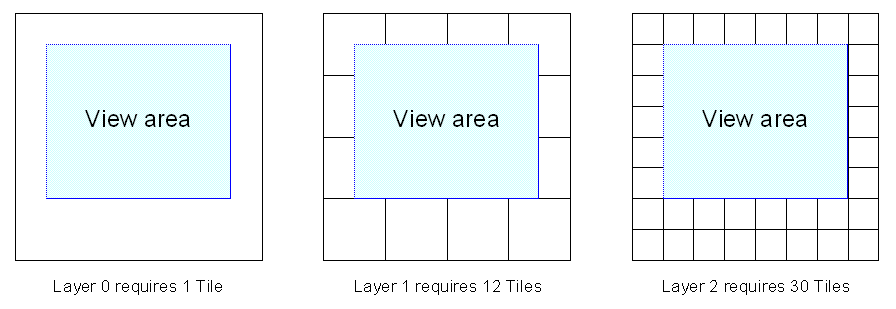

This is the simplest strategy in both terms of ease of use and operation. No parameters need to be defined.
The Tile based loading strategy takes the layers which observe the overlap factor rule, and chooses the layer which would use the largest number of tiles, but not more than 9, to display the required view.
For a simple map with a single Layer Stack, as the view zooms in, we descend through the stack.
Note: